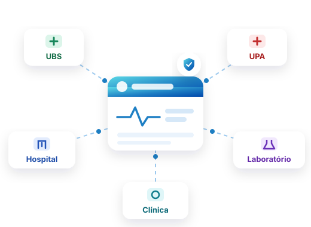

Saúde pública integrada
Seu histórico de saúde acompanha você em toda a rede.
Atendimentos, exames e receitas de UBSs, UPAs, hospitais e laboratórios reunidos em um só lugar, com acesso seguro.

Conectando sua saúde…
Um exemplo real do dia a dia da rede pública, com dados fictícios.
Maria chega à UPA com febre. A médica vê no Conecta que ela tem alergia a dipirona.
Diagnóstico, exames e receita entram no histórico da paciente, com a unidade de origem.
Dias depois, o médico da UBS consulta o atendimento da UPA e os exames, sem repetir nada.
Maria vê tudo na área do paciente, incluindo quem acessou seu prontuário.
Acesso apenas por profissionais autorizados, documentos mascarados e registro de cada consulta ao prontuário.
Sim. Na Área do paciente, clique em “Cadastre-se como paciente” e informe CPF, CNS e data de nascimento.
Não. Apenas profissionais autorizados e vinculados a unidades integradas, durante o atendimento. Cada acesso fica registrado.
Entre na Área do paciente e abra “Meus exames”. Resultados liberados podem ser visualizados e salvos em PDF.
Não. O Conecta é um protótipo de integração de informações e usa o número do CNS apenas para identificar o paciente.